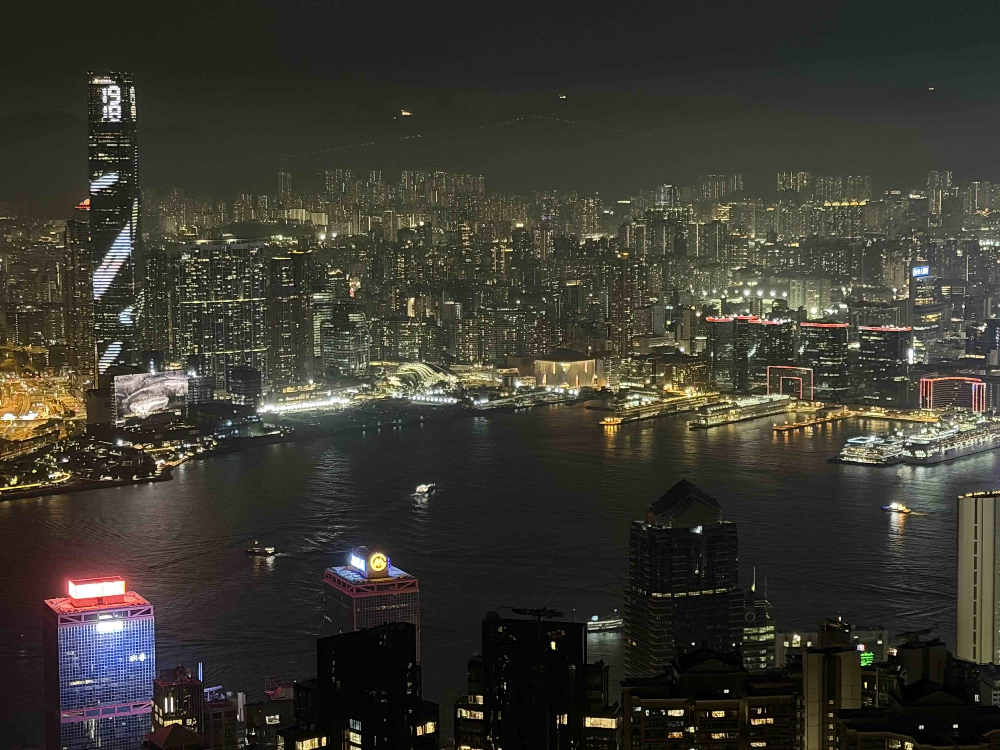
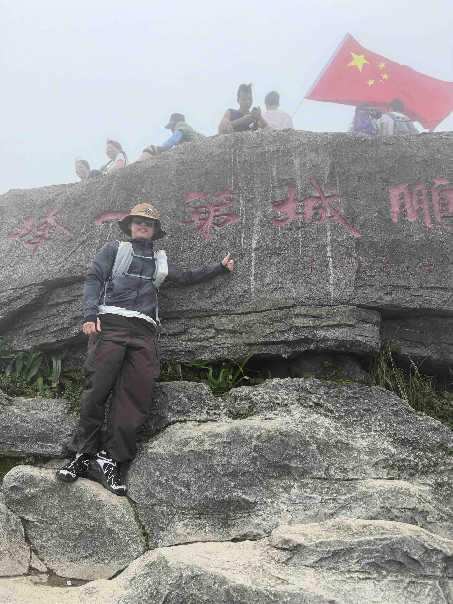
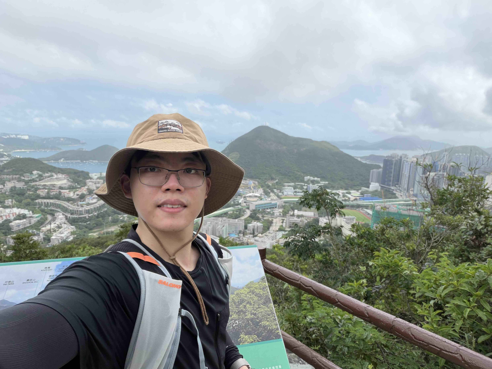
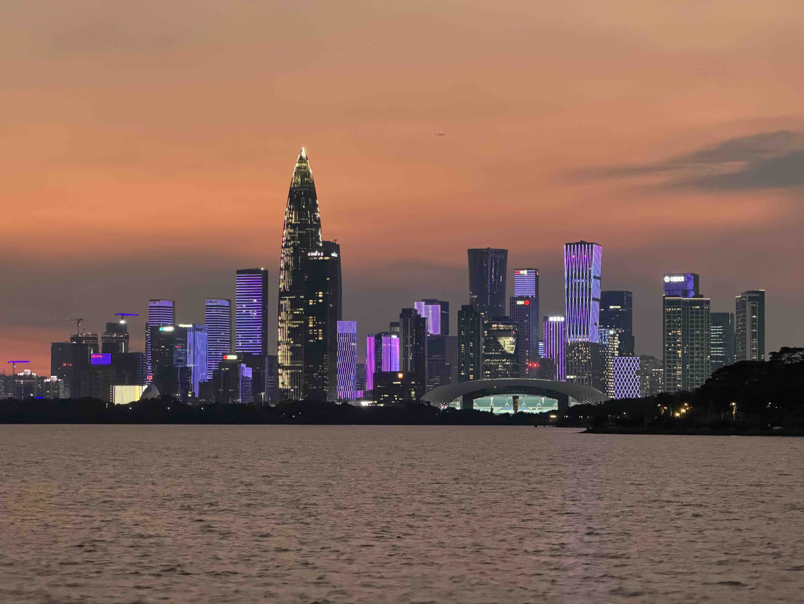

Received a third-round revise-and-resubmit request from Academy of Management Journal for the Rhetoric & Bitcoin project.
About
Institutions, sustainability, and technologies.
Hi, I am Ze Zhang (张泽), a Ph.D. candidate in Management and Strategy at The University of Hong Kong.
My research examines nonmarket strategy, informal institutions, and emerging technologies. I study how firms strategically respond to institutional pressures surrounding sustainability, with particular attention to how stakeholders and shareholders—empowered by religion, social norms, and other informal institutions—shape corporate governance and ESG outcomes.
I also investigate blockchain and cryptocurrencies, focusing on the forces that shape these technologies’ legitimacy and trustworthiness among regulators, investors, and the public.
Please feel free to get in touch if you would like to discuss my research.
Latest News
Received a second-round revise-and-resubmit request from Academy of Management Journal for the Rhetoric & Bitcoin project.
Curriculum Vitae
Academic experience and appointments.
View my latest CV
The document opens in a new browser tab.
Research
Informal institutions, sustainability, and technological change.
My work connects nonmarket strategy with the institutional foundations of organizational behavior.
In my nonmarket strategy projects, I explore how stakeholders and shareholders shaped by religious logic influence firms’ risk-taking behavior and environmental performance. In my research on blockchain and cryptocurrencies, I examine how news media and political shocks shape the legitimacy and perceived trustworthiness of emerging technologies.
Selected Projects
Bitcoin as Gold? The Role of Rhetoric in Analogy Construction and Deconstruction
With You (Willow) Wu and Shipeng Yan
Third-round R&R · AMJStrength of Weak Institution: How FinTech Empowers Carbon-Credit Policies
Job Market PaperTrust in Crisis: Institutional Failures and the Rise of Decentralized Alternatives
With Fabrice Lumineau and Shipeng Yan
Christian Institutional Investors and Corporate Decarbonization
With Shipeng Yan and John Almandoz
Islamic Institutional Investors and Firm Risk-Taking Behaviors
With Shipeng Yan
Climate Litigation and Corporate Decarbonization
With Lizhen Wang and Shipeng Yan
Satellite Data of Corporate Carbon Emissions
With Junhan Wang and Shipeng Yan
Confucianism and Firm Financial Misconduct
Publications
Published work and conference proceedings.
Book Chapters
-
Air Pollution and Investors’ Behavior: A Review of Recent Literature
The Routledge Handbook of Green Finance, 2023
View publication ↗
Conference Proceedings
-
Bitcoin as Gold: The Role of Rhetoric
Academy of Management Annual Meeting, 2024
View proceeding ↗
Beyond Research
Notes from the mountains.
A visual journal of trails, summits, and the landscapes in between.

01Add mountains/mountain-01.jpg
04Add mountains/mountain-04.jpg
05Add mountains/mountain-05.jpg
06Add mountains/mountain-06.jpg